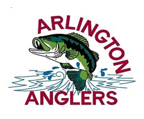
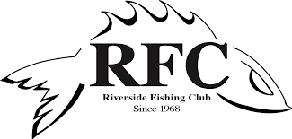
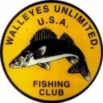
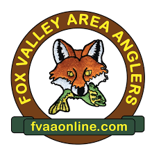

Are you passionate about fishing or eager to learn? Explore our vibrant community of fishing clubs dedicated to all things angling! Whether you're a seasoned pro or just starting out, our clubs offer something for everyone.
Arlington Anglers
We are one of the oldest and most established fishing clubs, serving the northwest suburbs of Chicago and beyond. Our club is a family oriented, multi-species fishing club encouraging anglers of all skill levels to join and enjoy the benefits of our club! Each month we have interesting educational topics from renowned guest speakers sharing their experiences, new trends and knowledge to our members. During the year, we also host fishing clinics, special needs programs, and other fishing related outreach activities. We culminate each year with a December Holiday Party where we award Big Fish Contest Winners along with other recognition and awards.
Visit us here!Midwest Musky Club
We are a Fishing Club located Southwest of Chicago. Midwest Musky Club was founded in 1977 to promote the sport of fishing Muskies for families and individuals, young and old, non-disabled and disabled, with the purpose of improving the skill of anglers through an open exchange of ideas and methods. We are proud of our commitment to contributing our resources to charitable organizations in our community.
Visit us here!Walleyes Unlimited USA
Our club attracts a wide variety of anglers and skill levels. By sharing information, Walleyes Unlimited members learn the latest techniques and methods and locations for a variety of species. Founded in 1969, Walleyes Unlimited USA is now recognized as one of the top multi-species fishing clubs in the country and has been educating anglers for over five decades!
Visit us here!Fox Valley Area Anglers
Every month we have premium speakers for members and guest that are very educational. During those meetings speakers share their experiences, knowledge, meet new and old friends. During the year we get the opportunity to support and participate in Fox Valley Special Recreation Association, “FVSRA” and children’s fishing derby’s in neighboring counties.
Visit us here!That teams are the best for their states and also are the most popular for the people who loves fishing